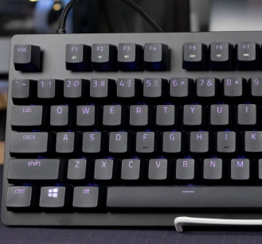
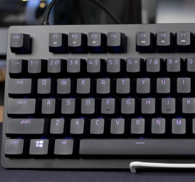
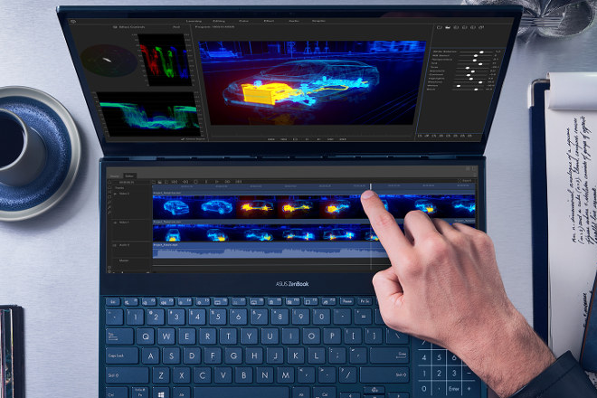
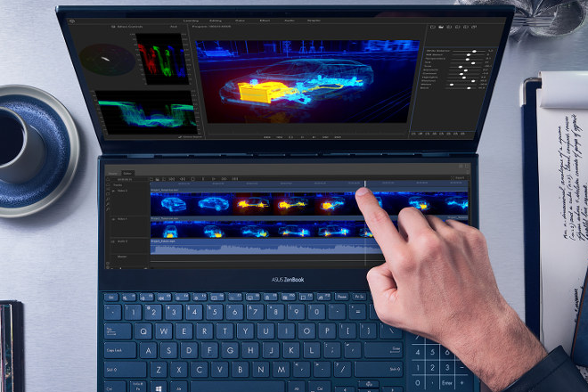

Topics
200MP Samsung Galaxy S23 Ultra
 

The most significant update to the S23 Ultra is its new 200-megapixel “Adaptive Pixel” rear sensor that Samsung says is a first for its Galaxy family of products. While you will have the option to shoot at 200MP, by default the system uses pixel-binning to deliver brighter, clearer pictures at 12MP.
MacBook Air Vs. MacBook Pro
 

Mackbook air specs - Chip: M2, Display: 13.6-inch LCD Liquid Retina, Weight: 2.8 pounds, CPU: 8-core, GPU: 10-core Storage: 256GB (base); up to 2TB.
Macbook Pro Specs - Chip: M2 Pro or M2 Max, Display: 14.2-inch mini-LED Liquid Retina XDR, Weight: 3.5 pounds, CPU: 10 core (base); up to 12-core, GPU: 16-core (base); up to 30-core, Storage: 512GB (base); up to 8TB of SSD Price: $1,999+
The newest MacBook Air and MacBook Pros both are integrated with Apple's second-generation silicon — but they are not equal. The newest MacBook Air comes with the M2 chip, while the newest MacBook Pros can be configured with Apple's newer and more advanced M2 Pro or M2 Max chips. The difference between the M2, M2 Pro and M2 Max chips mostly comes down to the number of CPU and GPU cores. The M2 chip has a max of 8-core CPC and 10-core GPU; the M2 Pro chip has a max of 12-core CPU and 19-core GPU; the M2 Pro Max has a max of the same 12-core CPU as the M2 Pro, but has a big jump in GPU with a max 38 cores.
ChatGPT Passes Google Coding Interview for Level 3 Engineer With $183K Salary


reported(Opens in a new window) by CNBC, the experiment was done as part of Google's recent testing of multiple AI chatbots, which it's considering adding to the site. ChatGPT's ability to surface a concise, high-fidelity answer to a question could save users time typically spent surfing links on Google to find the same information.